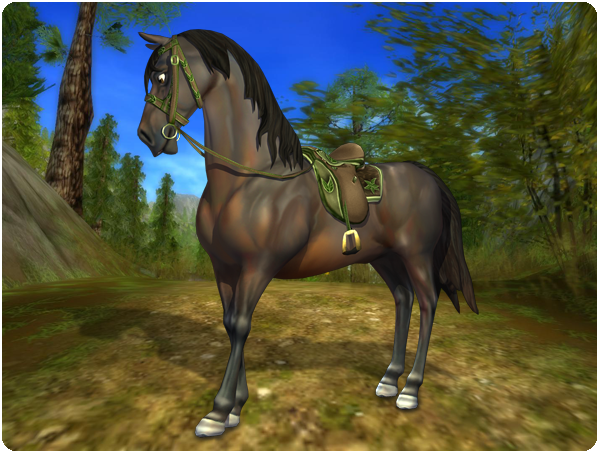

Hi there!
This week's update includes an exciting race!
New Race:
Will at the windmill in Silverglade has restarted the old race around the windmill! Ride there, talk to him, and see if you can beat the old masters of this track! To get the best time, you and your horse might need to take some risks...

New collector's equipment for your horse:
New collectors equipment has arrived to Jorvik! This times it's Firgroves cool equipment and you can find it in the Star Shop in Firgrove. You can also complete the outfit by getting the matching legwraps in the decoration shop in Silverglade Village!